This scene is not unlocked yet in your progress
The Maidens' Holy War ~Prodigy~
―I could hear it.
The sound announcing the start of battle.
These were no ordinary footsteps.
It was the sound of fate, given form, being carried before us.
The sound announcing the start of battle.
These were no ordinary footsteps.
It was the sound of fate, given form, being carried before us.
"Thank you for waiting. Russian-roulette takoyaki, 12 pieces, two duds." [TN: takoyaki: fried batter balls with octopus inside]
At last, the thing in question had been delivered before us.
Or so it should have been, but―
At last, the thing in question had been delivered before us.
Or so it should have been, but―
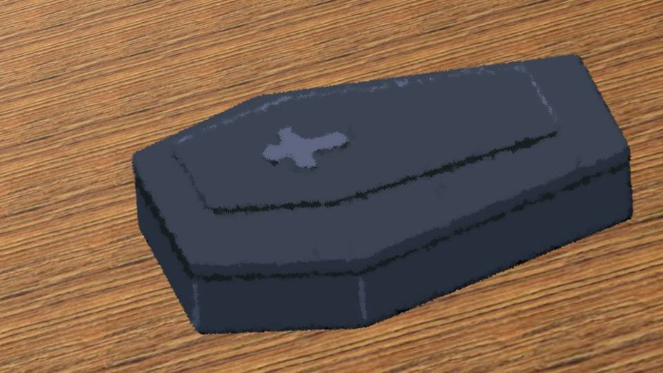
Wh... what is this...
What had been set on the table was a small coffin about 30 centimeters long.
The takoyaki were in this thing...?
What a tasteless setup! Is this a dig at me, since today's the anniversary of my dad's death!?
What had been set on the table was a small coffin about 30 centimeters long.
The takoyaki were in this thing...?
What a tasteless setup! Is this a dig at me, since today's the anniversary of my dad's death!?
"Then, as our eldest, Niimura-senpai should open it.
Do be... careful..."
"It's an important role, Haruka... Break the seal..."
Not you two too, quit making it all creepy! What part of this is an important role!?
"It's an important role, Haruka... Break the seal..."
Not you two too, quit making it all creepy! What part of this is an important role!?
Calm down, me... What's in here is just takoyaki, after all.
Why am I this nervous just about opening a box of takoyaki...
Okay, I'm opening it...!
Why am I this nervous just about opening a box of takoyaki...
Okay, I'm opening it...!
"Whoa...!"
Thick smoke billowed out from inside, and everything was swallowed in a pure-white darkness.
What a pointless production...!
Damn! If I flinch at something like this, I'll never make it through this battle!
Thick smoke billowed out from inside, and everything was swallowed in a pure-white darkness.
What a pointless production...!
Damn! If I flinch at something like this, I'll never make it through this battle!
―Gradually the smoke cleared, and the whole picture came into view.
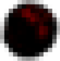
Inside the coffin, 12 takoyaki waited quietly for their moment.
What is this...!
Normally these all look the same, but these Russian-roulette takoyaki were red, green, yellow, black...?
What is this...!
Normally these all look the same, but these Russian-roulette takoyaki were red, green, yellow, black...?
I sensed an eerie bloodlust coming from the black ones in particular.
The black ones are seriously no good! They're not something you can look at head-on...!
For the sake of anyone watching, self-censorship is required...!
The black ones are seriously no good! They're not something you can look at head-on...!
For the sake of anyone watching, self-censorship is required...!
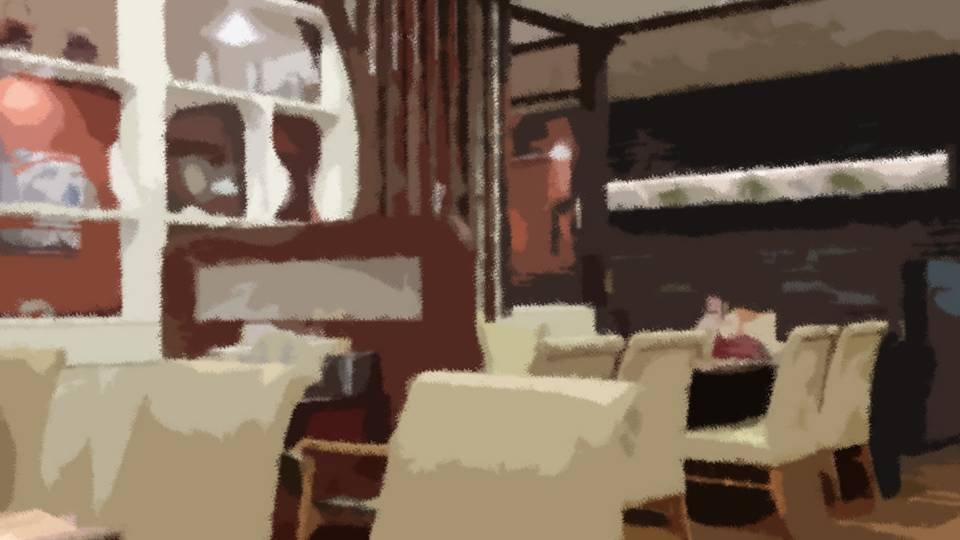
Goto picked up the menu.
"Let's see... Looks like the Russian-roulette takoyaki here have a different spice at random. Habanero, wasabi, Japanese mustard, and then... 'Black Death Devil Pepper'?"
What kind of spice is that, with a never-heard-of, sinister name like that!
Now even Zahha's taking the joke way too far!
"Let's see... Looks like the Russian-roulette takoyaki here have a different spice at random. Habanero, wasabi, Japanese mustard, and then... 'Black Death Devil Pepper'?"
What kind of spice is that, with a never-heard-of, sinister name like that!
Now even Zahha's taking the joke way too far!
"Of course, there are only two hits in here.
So just because one is red doesn't necessarily mean it has habanero in it."
So if it's red, habanero, if green, wasabi, if yellow, Japanese mustard, and if black, a hit of Black Whatever Pepper, maybe. Is that the idea?
So if it's red, habanero, if green, wasabi, if yellow, Japanese mustard, and if black, a hit of Black Whatever Pepper, maybe. Is that the idea?
Three each of red, green, yellow, and black. Even if I got a hit, I could pick what kind of heat.
Should I go for a habanero takoyaki, which doesn't go up your nose?
Right, I'll attack with red.
And then the black Whatever Pepper. If I worked at Zahha, I'd definitely mix this one in.
So I predict black is the most likely to be a hit.
Should I go for a habanero takoyaki, which doesn't go up your nose?
Right, I'll attack with red.
And then the black Whatever Pepper. If I worked at Zahha, I'd definitely mix this one in.
So I predict black is the most likely to be a hit.

"Senpais, let's go in order of age."
This is bad! It has to be a proposal that gives Goto even the slightest edge!
This is bad! It has to be a proposal that gives Goto even the slightest edge!
"No, Goto! Let's be fair and do rock-paper-scissors! Whoever wins rock-paper-scissors eats first!"
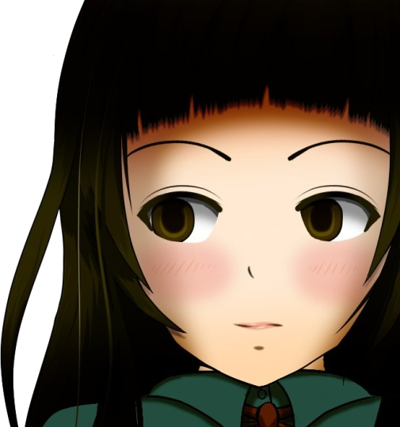
"............
Tch...!"
Goto just clicked her tongue at me, her senpai, right to my face...!
I'm winning this match no matter what!
Goto just clicked her tongue at me, her senpai, right to my face...!
I'm winning this match no matter what!
"Paramen Abiran Eriklan―"
Natsumi was still chanting under her breath...
Natsumi was still chanting under her breath...
"All right! Rock, paper, scissors, shoot!"
I threw scissors... the two of them threw paper.
Which means I won, so I go first!
By Goto's calculations, this is the worst pattern for me.
I threw scissors... the two of them threw paper.
Which means I won, so I go first!
By Goto's calculations, this is the worst pattern for me.
―After rock-paper-scissors, the order ended up going by age, exactly as Goto first proposed: me, Natsumi, Goto.
"............
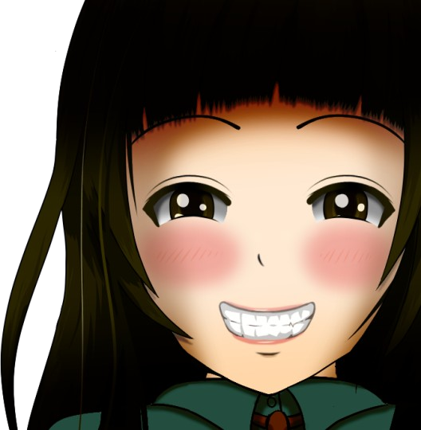
(￣ー￣)"
Goto's smile was truly infuriating.
Goto's smile was truly infuriating.
All right...!
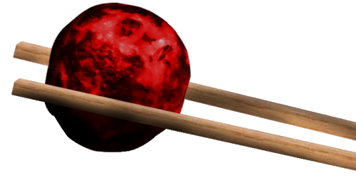
As planned, I picked up a bright-red takoyaki with my chopsticks.
With Russian-roulette takoyaki, if you use a toothpick, the batter breaks and you can tell what's inside.
So Zahha officially bans toothpicks and forks, and instructs you to use chopsticks or a spoon and to eat each one in a single bite.
With Russian-roulette takoyaki, if you use a toothpick, the batter breaks and you can tell what's inside.
So Zahha officially bans toothpicks and forks, and instructs you to use chopsticks or a spoon and to eat each one in a single bite.
"............"
Even when I sniffed it, there was only a faint smell of flour and oil. I couldn't tell what was inside.
It's fine! The odds are still 10 in 12. Reduced, that's...
Argh! Just eat it!
Even when I sniffed it, there was only a faint smell of flour and oil. I couldn't tell what was inside.
It's fine! The odds are still 10 in 12. Reduced, that's...
Argh! Just eat it!
............
A tangy tomato sauce, and rich cheese.
And the octopus and the batter went perfectly with them.
It was just like a seafood pizza!
"It's good...!"
Yes! I won the first round!
And the octopus and the batter went perfectly with them.
It was just like a seafood pizza!
"It's good...!"
Yes! I won the first round!


The two of them were sullenly glaring at me, but I shot back a triumphant look.

"Haruka, mark my words. It's only the first round. Wear that face while you still can!"
If Natsumi was taunting me like that, I must have done some real psychological damage.
I see. Every time you clear one, the mood tips further your way.
If Natsumi was taunting me like that, I must have done some real psychological damage.
I see. Every time you clear one, the mood tips further your way.
But even though the filling had been that rich and fragrant, I hadn't been able to smell it when I sniffed it before eating.
Which means even wasabi, which is easy to smell, probably has its smell sealed in the same way.
They've gone all out on these...!
Which means even wasabi, which is easy to smell, probably has its smell sealed in the same way.
They've gone all out on these...!
Natsumi also put a red takoyaki in her mouth.
"Oh, tomato and cheese! It's good, like pizza!"
Daaammit!! What's the point if the one who started this, you, doesn't get hit!
And she ate the red I was aiming for...!
"Oh, tomato and cheese! It's good, like pizza!"
Daaammit!! What's the point if the one who started this, you, doesn't get hit!
And she ate the red I was aiming for...!
I see, it's true. Even an opponent clearing just one does a lot of mental damage.
Goto, you know which one to pick, don't you?
Goto, you know which one to pick, don't you?
"You're right! The red takoyaki are so good!"
And she ate red!
Damn! Nobody got hit, and on top of that, the reds are gone! I survived a whole round, so why do I feel so defeated!
And she ate red!
Damn! Nobody got hit, and on top of that, the reds are gone! I survived a whole round, so why do I feel so defeated!
"Well, Niimura-senpai, the habanero's gone now! Senpai, your strategy ends here."
So Goto did go for that on purpose!
So as things stand, with my strategy cut off, I'm the one at the biggest mental disadvantage.
So Goto did go for that on purpose!
So as things stand, with my strategy cut off, I'm the one at the biggest mental disadvantage.
What's left: wasabi, Japanese mustard, and whatchamacallit.
If I'm aiming, it's wasabi or Japanese mustard!
Which one's less bad? I don't know anything about spicy food, so I can't tell!
Argh, yellow it is!
If I'm aiming, it's wasabi or Japanese mustard!
Which one's less bad? I don't know anything about spicy food, so I can't tell!
Argh, yellow it is!
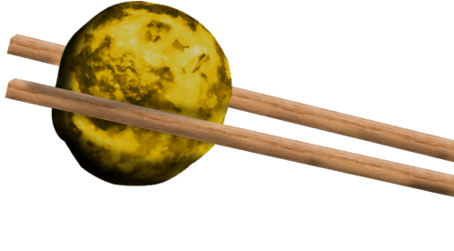
"Phew..."
A big deep breath, to eat a takoyaki.
A deep breath for a takoyaki, of all things.
Today has way too many takoyaki-related firsts.
This takoyaki has got to be omelet-flavored!
A big deep breath, to eat a takoyaki.
A deep breath for a takoyaki, of all things.
Today has way too many takoyaki-related firsts.
This takoyaki has got to be omelet-flavored!
Ooh...?
It's not omelet, but is this pumpkin?
Surprisingly, it's really good! Just like potage!
You can't look down on this twist just because it's family-restaurant takoyaki!
It's not omelet, but is this pumpkin?
Surprisingly, it's really good! Just like potage!
You can't look down on this twist just because it's family-restaurant takoyaki!
Both of them were glaring at me, but I could sit back and enjoy the show.
Heh-heh, Erina Goto-chan, what might the odds be that I don't get hit in round two?
Heh-heh, Erina Goto-chan, what might the odds be that I don't get hit in round two?
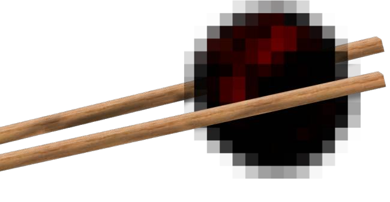
―!?
What Natsumi went for was black...!
Are you out of your mind!? On top of being a mystery spice, it's got the highest chance of being a hit (in my book)!?
You really are a gambler. When Natsumi turns 18, I'll have to keep a close eye on her so she doesn't get hooked on gambling.
What Natsumi went for was black...!
Are you out of your mind!? On top of being a mystery spice, it's got the highest chance of being a hit (in my book)!?
You really are a gambler. When Natsumi turns 18, I'll have to keep a close eye on her so she doesn't get hooked on gambling.
"Oh, instead of octopus, it's marshmallow and chocolate cream, like a dessert! And the batter tastes like a cocoa crepe, so good!"
She got through clean...!
She got through clean...!
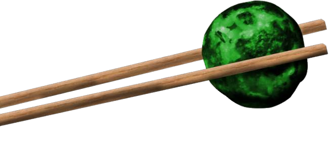
Then Goto picked up a green takoyaki.
All right, yellow's untouched!
All right, yellow's untouched!
"This is avocado! It goes great with the basil sauce inside and the half-raw octopus, like a carpaccio! It's delicious!"
Ngh...! We're down to half and still nobody's been hit!
I'd better start bracing myself...
"I'm just... gonna get some water."
I'd better start bracing myself...
"I'm just... gonna get some water."
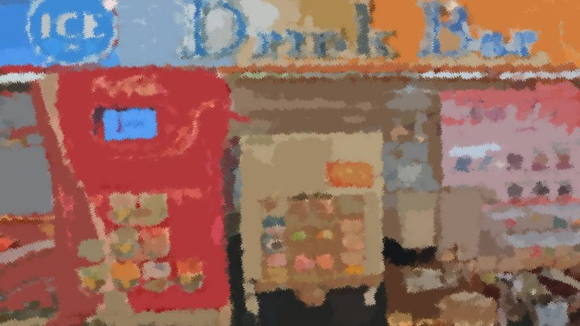
While pouring water, I reworked my strategy.
Yellow, green, and black: two of each were left.
I'm still going after yellow.
But even if it's Japanese mustard, its destructive power is beyond measure.
I'm especially bad with spicy stuff. I'll get three full glasses of water.
Yellow, green, and black: two of each were left.
I'm still going after yellow.
But even if it's Japanese mustard, its destructive power is beyond measure.
I'm especially bad with spicy stuff. I'll get three full glasses of water.
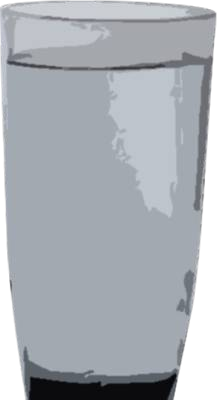
But why did Natsumi pick black in round two?
Normally you'd want to avoid black. Is she just not thinking at all?
Normally you'd want to avoid black. Is she just not thinking at all?
She can't be thinking about nothing at all.
They've taken a game of pure luck like Russian-roulette takoyaki and given it room for deduction through the colors.
I can't believe fury-mode Natsumi wouldn't notice that, but...
They've taken a game of pure luck like Russian-roulette takoyaki and given it room for deduction through the colors.
I can't believe fury-mode Natsumi wouldn't notice that, but...

When I got back to the table, the two of them had their eyes closed again, muttering to themselves.
"Habanero's capsaicin content is 100,000 to 350,000 Scoville. Black Death Devil Pepper's Scoville rating is 16 million, so―"
"Hit Haruka...! Hit Goto...!"
Goto was stringing together words that made no sense, and what Natsumi was chanting wasn't even an incantation anymore.
"Habanero's capsaicin content is 100,000 to 350,000 Scoville. Black Death Devil Pepper's Scoville rating is 16 million, so―"
"Hit Haruka...! Hit Goto...!"
Goto was stringing together words that made no sense, and what Natsumi was chanting wasn't even an incantation anymore.
I set down the three glasses of water and took my seat.
Then the two of them silently took one glass each.
Ah... those were all for me, though...
Ah... those were all for me, though...
"Now then, Niimura-senpai. Pumpkin, avocado, or chocolate: which would you prefer?"
"Haruka, we're best friends, right?"
Shut up, shut up...! I've decided on yellow!
"Haruka, we're best friends, right?"
Shut up, shut up...! I've decided on yellow!
............
This is...! The taste of pumpkin...!
Yes, three wins in a row!
Yes, three wins in a row!
"Mmm! Pumpkin really is delicious!"
I laid on the sarcasm as thick as I could.
I laid on the sarcasm as thick as I could.
Goto started muttering probability calculations to herself again, and Natsumi was
bending a spoon like clay with one hand.
Heh-heh, sorry! This was a contest between the two of them to begin with. They're the ones who should lose!
Natsumi picked up a green takoyaki.
"............!"
Surely no one has ever glared at a takoyaki this hard before.
Come on! Scream...!
"............!"
Surely no one has ever glared at a takoyaki this hard before.
Come on! Scream...!
"............
Mmm! Avocado really is delicious!"
Didn't I want to protect Natsumi's life from the shinigami?
Right now, I'd like to cheer the shinigami on, just a little.
Now, what'll Goto do?
Didn't I want to protect Natsumi's life from the shinigami?
Right now, I'd like to cheer the shinigami on, just a little.
Now, what'll Goto do?
―!?
She's picking black here, of all times!?
But that works for me. All I have to do is win...!
She's picking black here, of all times!?
But that works for me. All I have to do is win...!
"............
............"
"Gyaaaaah"
Goto's frenzied shrieking drew every eye in Zahha.
Yes...! The Black Death Devil Pepper got Goto!
The genius girl has fallen!
Yes...! The Black Death Devil Pepper got Goto!
The genius girl has fallen!
"Ha...
Ha...
Habanero...!"
From Goto's open mouth, bright-red sauce peeked out.
Habanero!?
That's impossible! Goto ate a black one!
From Goto's open mouth, bright-red sauce peeked out.
Habanero!?
That's impossible! Goto ate a black one!
"Hust hoing hoo ha hahroom!"
Unable to bear the heat, Goto left her seat.
No matter how many times I replay it, Goto definitely picked black!
I checked the menu once more.
............!!
Damn! I've been had!
It doesn't say anywhere that the color of the takoyaki matches the spice!
I'd just assumed the habanero was in the red takoyaki!
............!!
Damn! I've been had!
It doesn't say anywhere that the color of the takoyaki matches the spice!
I'd just assumed the habanero was in the red takoyaki!
Which means the habanero, the wasabi, the Japanese mustard, and the Black Death Devil Pepper could all still be left...!
What's left: one yellow, one green, one black...
―!!?
What's left: one yellow, one green, one black...
―!!?
Wh... how could this be!
From here, I eat two, and Natsumi eats one.
The earlier your turn, the more tries you end up taking!
I see, so that's why Goto wanted to push her turn back as far as she could.
From here, I eat two, and Natsumi eats one.
The earlier your turn, the more tries you end up taking!
I see, so that's why Goto wanted to push her turn back as far as she could.
Natsumi seemed to have noticed too, and was grinning.
So wicked, so insidious...
If I had to compare that face to something... yes... a witch.
So wicked, so insidious...
If I had to compare that face to something... yes... a witch.
"Now, Haruka... let us enjoy this match."
So what character are you even playing?
So what character are you even playing?
There has to be at least one Black Death Devil Pepper.
Then a player who doesn't know the colors and the fillings are unrelated will deliberately avoid black.
Zahha probably calculated that things would play out like this.
Drag the game out on purpose, then settle it at the very end to work up the excitement.
Then a player who doesn't know the colors and the fillings are unrelated will deliberately avoid black.
Zahha probably calculated that things would play out like this.
Drag the game out on purpose, then settle it at the very end to work up the excitement.
Damn! So I was dancing to Zahha's tune all along! Making me draw up a strategy, when it's just a family restaurant...!
Then again, you could say that's how I survived this far.
Then again, you could say that's how I survived this far.
If so, then black, which tends to last to the end, is the hit after all.
Because it's more exciting if the real hit survives until the very end.
In other words, what I should go for here is yellow or green!
Because it's more exciting if the real hit survives until the very end.
In other words, what I should go for here is yellow or green!
As before, I picked up the yellow one with my chopsticks.
"Well, well... Haruka, I didn't know you loved pumpkin so much. I'll bake you a pumpkin cake for your next birthday. Which spice would you like in it?"
Don't take her bait...! Believe in yourself! In the you who made it this far...!!
"Well, well... Haruka, I didn't know you loved pumpkin so much. I'll bake you a pumpkin cake for your next birthday. Which spice would you like in it?"
Don't take her bait...! Believe in yourself! In the you who made it this far...!!
Huh...?
Something was wrong...
I couldn't taste anything...
Had my tongue gone numb...?
Had I lost?
Something was wrong...
I couldn't taste anything...
Had my tongue gone numb...?
Had I lost?
My mouth... wouldn't move...
I couldn't... smell anything...
The flavor... the texture... all five senses, stolen...
Robbed of every sensation, I was locked inside a prison of thought.
I couldn't... smell anything...
The flavor... the texture... all five senses, stolen...
Robbed of every sensation, I was locked inside a prison of thought.
No, my senses are just dulled by the extreme tension!
Feel it! You have to feel it! The flavor of pumpkin!
The wind and the scent of the soil in the pumpkin fields...!
Feel it! You have to feel it! The flavor of pumpkin!
The wind and the scent of the soil in the pumpkin fields...!
―That was on last year's school trip.
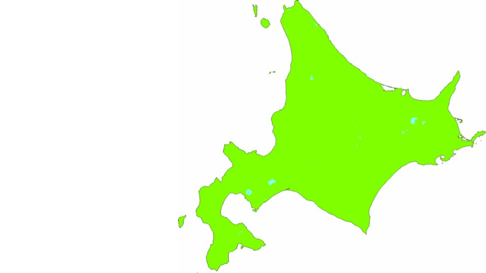
Our destination: Hokkaido.
The day I left Honshu for the first time and set foot on the land across the sea.
The day I left Honshu for the first time and set foot on the land across the sea.
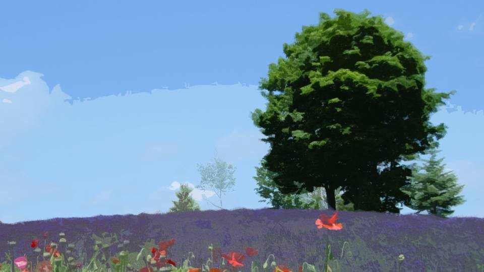
Hokkaido's Furano.
It's also known for melons, but the pumpkins the melon farmers grow are famous too.
It's also known for melons, but the pumpkins the melon farmers grow are famous too.
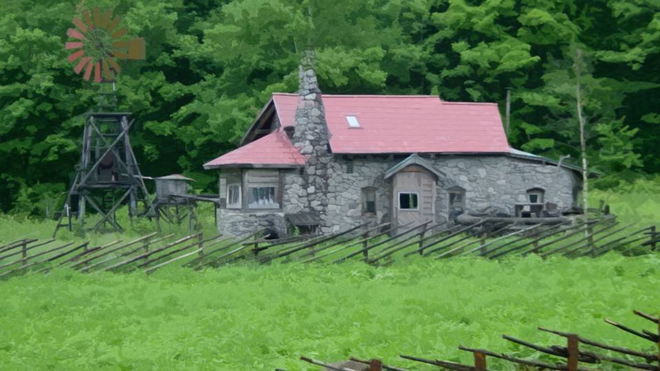
That's it. The aroma spreading through my mouth was the same as the pumpkin I tasted in Hokkaido's Furano.
The moment I recognized it, the sweet aroma of pumpkin spread rapidly through my mouth.
It was the taste of victory, together with nostalgia and deep emotion.
It was the taste of victory, together with nostalgia and deep emotion.
I'm still just a fledgling.
I never knew the taste of victory, or the taste of pumpkin, could bring such joy.
I never knew the taste of victory, or the taste of pumpkin, could bring such joy.
A single tear ran down my cheek as I gazed at Natsumi.
"Natsumi... I'll be looking forward to that pumpkin cake..."
The glass of water Natsumi was gripping shattered.
"Natsumi... I'll be looking forward to that pumpkin cake..."
The glass of water Natsumi was gripping shattered.
"That's Haruka for you. Truly worthy of being my best friend.
That shrimp can't hold a candle to you!"
"Natsumi... I'm honored to have fought you. Win or lose, I have no regrets. I'm thankful that I could give it my all like this, and thankful to Natsumi for bringing me this match."
"Natsumi... I'm honored to have fought you. Win or lose, I have no regrets. I'm thankful that I could give it my all like this, and thankful to Natsumi for bringing me this match."
"My, what a lovely thing to say.
But sadly, every match must end, and a winner must be decided. The moment I eat the next one, everything will be settled.
Still, for reference, tell me. Green or black... Haruka, which do you think is the hit?"
Natsumi narrowed her eyes and spoke in a gentle tone.
I too lamented this match's end, and told Natsumi my own strategy.
I too lamented this match's end, and told Natsumi my own strategy.
"I think black is the hit.
And what's inside it is Black Death Devil Pepper."
"That's Haruka for you.
From Zahha's point of view, you stage it so black lasts to the end, and plant your trump-card spice in it: Black Death Devil Pepper."
So Natsumi had noticed too. Zahha's side of things, which Goto's probability calculations alone couldn't reveal...
Which means Natsumi will pick green next.
If our prediction is right―I lose...
So Natsumi had noticed too. Zahha's side of things, which Goto's probability calculations alone couldn't reveal...
Which means Natsumi will pick green next.
If our prediction is right―I lose...

"But I choose black!"
"Why!? Isn't that dangerous!?"
"Haruka, have you forgotten? I chose black in round two, did I not? You didn't grasp my intent?"
"Wh-what do you mean...!?"
"A feint..."
"Why!? Isn't that dangerous!?"
"Haruka, have you forgotten? I chose black in round two, did I not? You didn't grasp my intent?"
"Wh-what do you mean...!?"
"A feint..."
"I realized it in round two.
Suppose one of the blacks is a hit: the chance of getting hit with black is 1 in 3.
If the blacks last until the end, then everyone has to eat black eventually, but
before that, someone is sure to get hit with another color.
And I figured Goto, who can calculate probabilities, was less likely to draw a hit than Haruka."
"If Haruka got hit with something other than black, I, going first, would eat one more black than Goto.
In other words, my chance of getting hit with black would jump from 1 in 3 to 2 in 3.
For me, disposing of the blacks early is the iron rule of victory..."
"Just as I expected, Goto fell for my feint, picked black, and drew the hit.
But that it was not Haruka but Goto who fell for the feint was a miscalculation...
Goto, unlike Haruka, thought only about the probabilities in front of her and forgot to read Zahha's intentions.
My choosing black must have opened a gap in her guard.
Honestly...
Genius girl indeed. Inside, she's just a kid after all...
So now there's no hit left in black..."
"No, that logic is wrong! Natsumi, your logic assumes there's only one hit in black!
You can't rule out the possibility that there are two hits in black!"
"How unimaginative... Putting two hits in the same color...
"How unimaginative... Putting two hits in the same color...
would be a failure as entertainment!"
"Ridiculous! Then Black Death Devil Pepper would have to be in a color other than black!
Hitting at the very end is what makes it Black Death Devil Pepper, but this way it'd hit someone at some half-baked moment!
That's the unimaginative idea! In fact, black has lasted this long, and still nobody's been hit with Black Death Devil Pepper!"
"I see... Haruka, your thinking has a point too.
At this point, it's a battle of nerves.
A battle between me... Haruka... and Zahha...!"
"Haruka... this has truly been fun.
And...
too bad for you!"
Natsumi... I had fun too...!
For a wonderful time... thank you...
For a wonderful time... thank you...
"Heh-heh-heh...
Ha-ha-ha...
Ahaha...
Hahahahahahahaha!!"
"Ahhahahahahahahahahahahahahahahahahahahaha!!!!"
"Ha...
ha...
ha...?"
"Uingyaaaagyaaaaagoaaauoeeeeeeeuaebaaaaaaiiiiaaah!!!
p"
Natsumi let out a demonic scream.
Natsumi's face wore an expression not of this world.
If I had to compare it to something... yes... a shinigami.
Natsumi's face wore an expression not of this world.
If I had to compare it to something... yes... a shinigami.
I won... I won!
A total victory, won by avoiding the dangerous colors, reading Zahha's intentions, and holding to my resolve to the very end!
Not by luck. A victory by skill!
A total victory, won by avoiding the dangerous colors, reading Zahha's intentions, and holding to my resolve to the very end!
Not by luck. A victory by skill!
Natsumi dashed to the restroom just as Goto came back.
"Oh, Niimura-senpai, you won!"
"Yeah... I didn't win by luck alone... I won by skill!"
As of today, I proclaim it:
I, who defeated Fury Girl Natsumi Kogori and Genius Girl Erina Goto― am Prodigy Girl Haruka Niimura!
"Oh, Niimura-senpai, you won!"
"Yeah... I didn't win by luck alone... I won by skill!"
As of today, I proclaim it:
I, who defeated Fury Girl Natsumi Kogori and Genius Girl Erina Goto― am Prodigy Girl Haruka Niimura!
Read ✓ Next: Alibi →